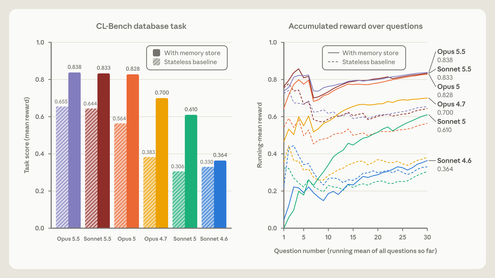
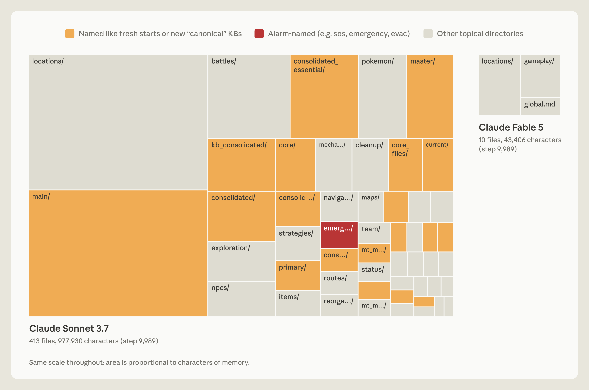
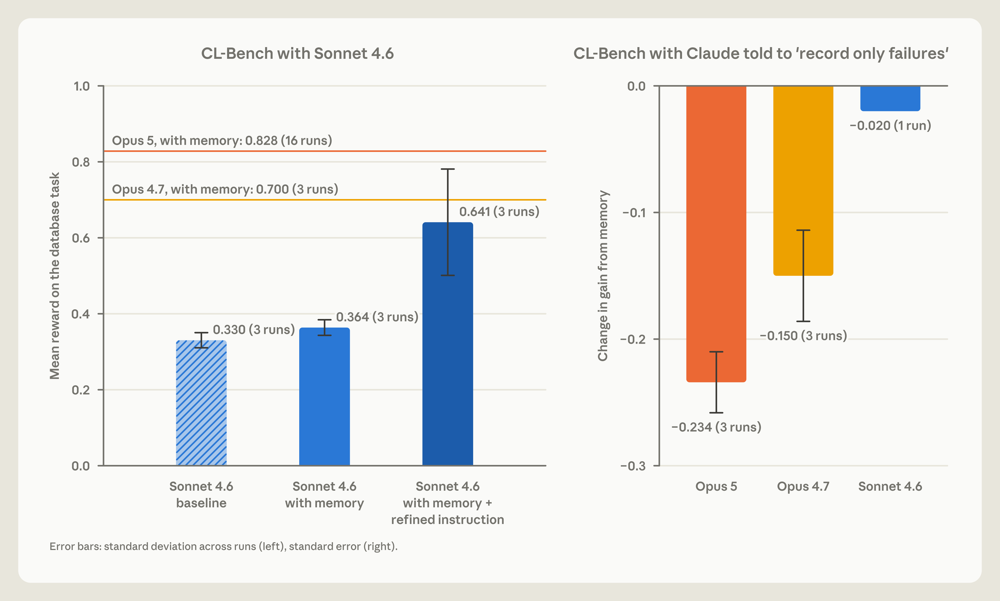
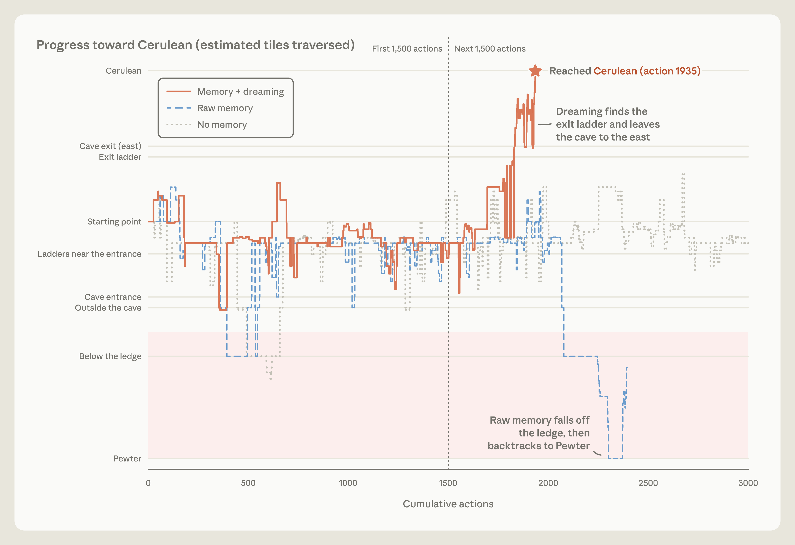
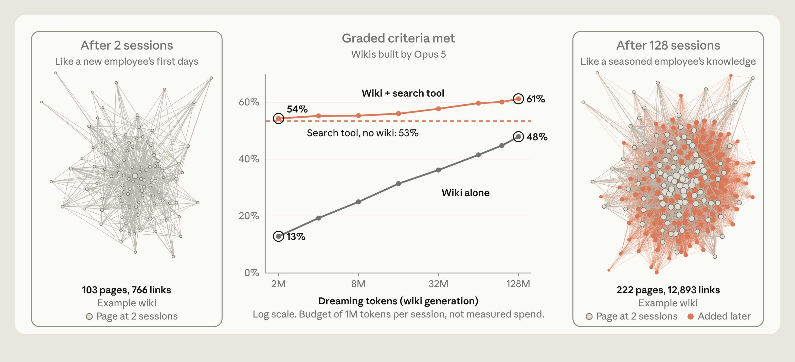
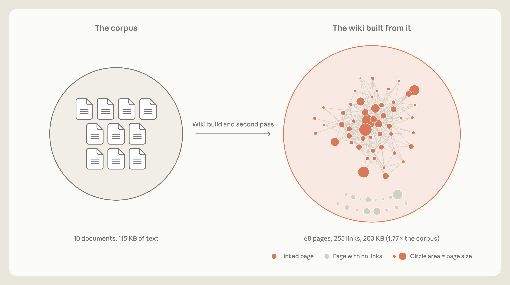

Agent 记忆的部件：记下、整理、表示、核对
山景城小路这条推文把读者指向 Anthropic 工程博客 The components of agent memory。
山景城小路的推文Anthropic 原文精读版（加密，需密码） 导读约 25 分钟
补充：这篇真正要带走的，是记录、整理、表示和验证，以及表示和检索互为补充。不是记得越多越好，也不是睡一觉就自动变聪明。跨模型的数字都带着样本限制，不能写成模型的总成绩。
这一节是山景城小路的推文，只作引介。
摘要里他把「记忆」拆成三件能动手的事：记什么、什么时候整理、整理成什么样。后文以博客自己的结构为准。
他写到让 Claude 玩宝可梦红版：Sonnet 3.7 写了 413 个记忆文件、225 个文件夹，只拿到 1 个徽章，然后提到 Fable 5。
这条推文的后半没有取到，公开接口只给到 Fable 5，这里不补。
当时抓经历，离线再整理，agent 记忆也可以这样分
从这里起是 Lance Martin 的博客 The components of agent memory。
作者 Lance Martin，团队 Engineering，日期 Nov 6, 2026。主题写成 Agents、Context engineering、Agent memory。日期没有时区。

封面画的是两个错开的半圆，一绿一粉，中间有一道缝，浅底。没有实验数字。
开篇借 Kierkegaard：生活只能向后理解，却必须向前过。做 agent 记忆时他们碰到类似的两难。
人随时在编码记忆。海马体当时抓住经历，所以形成得快、马上能用。但只有一部分经历会变成长期知识。
巩固很多发生在离线时：睡觉和安静休息里，海马体重放近期经历，慢慢蒸馏进新皮层。
agent 也可以这样分工。工作先落在日志或 transcript 里。Letta 和 UC Berkeley 提出过 sleep-time compute，用交互之间的空档重组已有上下文。同一想法用来整理记忆：对着日志改错，或写出新笔记和新表示。这常常被叫做 dreaming，见图 1。
他们发现 dreaming 有助于给 Claude 有效记忆。这篇讲他们怎么看待 agent memory，以及几项评估里 dreaming 和每个部件各起什么作用。

自下而上四层：transcripts（可搜索的事件日志）、Claude 写的 memory notes、wikis 这类 memory representations、以及每次会话都载入的 injected context。Dreaming 方框里，箭头从 transcripts 指向上面各层，相邻上层之间双向。
图注：dreaming 可以整理记忆。它能改错、写笔记、做新的记忆表示，或决定下次会话预先载入什么。
会话之间还能读的经验，才是这里的 agent memory
这一节给 agent memory 下定义。
agent memory 指 Claude 从经验里得到的知识，包括和用户的互动、被派的任务，并且留在会话之间，存成以后还能读的上下文。它排除三件别的事：改 weights（训练时定下的内部参数）、in-context learning（一次对话内部学到的）、compaction（Claude 写摘要换掉更早的回合，以便在新窗口里接着干）。
人脑里，经历之前、当时或之后放出的化学信号，可以把一段记忆标成重要。被标过的，离线时常常比没标过的更常被重放。这种 replay 帮助它稳下来，并整合进长期记忆。
类似地，Claude 可以在会话日志里当时就把显著事件标出来，以后更好找；也可以写进记忆库，比如一夹 memory notes，见图 2。问题是：还不知道后面会发生什么时，当下怎么判断什么显著。

同一套分层里，memory notes 被高亮。箭头从当次会话直接指向笔记，说明是 Claude 写下的显著观察。
图注很短：Claude 可以把笔记写进记忆。
写下规则，是在预测以后还会用到它
这一节说，记忆有时是对未来需要的预测。
记忆有时是预测。写下一条规则，就是预测这个模式以后还会用到。例如记下一条已核实的事实，是预测未来的会话会想直接依赖它，而不再复查。Claude 做这种预测已经好了很多。不是每条笔记都是预测。
例子来自 Continual Learning Bench（CL-Bench）1.0：衡量 agent 能不能用记忆做长程任务。其中一项要 Claude 查数据库回答一串问题。答完会被告知正确答案，然后可以写记忆，帮助以后的问题。
这里记忆可以撑起一个学习环。答错就记下失败，提出哪里错了的猜想，检验猜想，再收成以后怎么答的规则。
这项 CL-Bench 1.0 用 Claude Managed Agents 跑。每道题开新会话，只有一个例外：可以从一个跨会话保留的记忆目录里取文件。
不同模型把自己的学习环走到不同地步。Claude Sonnet 4.6 走到能写出「为什么错」的猜想。记忆目录里是一批文件，每份列着几条还没检验的猜测。

左图是 CL-Bench 数据库任务的平均奖励，无状态基线在前、记忆库在后。Opus 5.5：0.655、0.838。Sonnet 5.5：0.644、0.833。Opus 5：0.564、0.828。Opus 4.7：0.383、0.700。Sonnet 5：0.306、0.610。Sonnet 4.6：0.330、0.364。右图是同样这些模型、有无记忆时，30 道题上的滚动平均奖励。
图注：CL-Bench 数据库任务，各模型的记忆对照无状态基线。
Claude Opus 4.7 把笔记收成一份参考文档，并开始标明哪些事实查过、哪些还没确认。Claude Sonnet 5 在评分器核过之后把答案标成已确认，答错就写更正。
这些模型里，Claude Opus 5 第一个把环闭上。它的条目大多含一条规则（以及怎么知道它为真）、前面问题的答案，还有沿途发现的陷阱警告，见图 3。
Claude Opus 5.5 和 Claude Sonnet 5.5 也像 Opus 5 一样闭上了环，用记忆记下已验证的答题规则。有记忆时两者分数大约和 Opus 5 一样，但它们没有记忆时的基线略高一些。
各一次 run、大约一万步，不能写成模型的总成绩
这一节用宝可梦看 Claude 会不会判断该记什么。
他们让 Claude 玩 Pokémon Red。视频说明它要走复杂的长程任务，链接是演示，不是这页的静态图。记忆要检验的是：它判断该把什么存下来。每次运行开始，给模型一个记忆文件夹，边玩边读边写，见图 4。
比较的是 Claude Sonnet 3.7 和 Claude Fable 5 各一次 run，都大约走到 10,000 步。Sonnet 3.7 默认什么都可能重要，不加选择地写。档案里常常是一次战斗、一件道具、一个 NPC 各一份文件。最后 Sonnet 3.7 写了 413 个记忆文件、225 个文件夹，拿到一枚徽章。这不能写成对整个模型的总定论。
Fable 5 对照着写了九个文件、两个文件夹，再加一份顶层的 global.md，拿到四枚徽章。

Sonnet 3.7 又大又挤：413 个文件、977,930 个字符，文件夹包括 locations、main、battles，以及好几夹 consolidated。Fable 5 很小：10 个文件、43,406 个字符，在 locations、gameplay 和 global.md 里。正文说的九个文件加 global.md，和图上的 10 个文件是同一笔账。
图注：玩宝可梦时，Sonnet 3.7 和 Fable 5 的记忆目录。
Sonnet 3.7 的问题主要是宝可梦局面一直在变，写得很细的记录不断过时。于是越往后，越要把时间和资源花在翻记忆，而不是玩游戏。大约第 10,000 步，它开始第四夹 master 记忆文件。接下来 17 步里，新建六个文件、删掉九个，游戏里一步都没走。
Fable 5 把记忆用在游戏没有直接告诉它的事情上。Sonnet 3.7 记下的有些东西，比如手里有多少钱、人在地图哪，每回合都能从屏幕读到，存下来是重复。策略、计划和检验过的规则，只有 Claude 自己推出来才存在，不写下来就会消失。
Fable 5 就按这个来组织。global.md 像仪表盘：当前目标、打馆的预先计划（徽章在馆里赢），以及它自己用记忆的规则。locations 夹放特定路线的导航计划，gameplay 夹放它学到的玩法策略。连续七个精灵球没抓住一只鲤鱼王（最好抓的之一）之后，它在自己的笔记里写下：如果连续至少 3 个球失败，就改变按键时机，在菜单步骤之间多按 wait。笔记写着，这样做之后抓到了。这是模型自己的笔记，不是已经普遍验证的游戏规律。七次失败、改时机并插入 wait、随后抓到，这三件事的先后都在，但不能当成已经证明的因果。
记忆夹小得多的 Fable 5，在游戏里比 Sonnet 3.7 走得远得多。Opus 5.5 做法相近：只留一小夹笔记，记当前目标和接下来几步，边玩边改，并且打通了游戏。
更强的模型被定死规则，记忆带来的增益可能变小
这一节讲该怎么告诉 Claude 写记忆。
有用的是告诉它记忆是干什么的，而不是怎么用。CL-Bench 上他们只说有一个记忆夹。这种笼统提示就够 Opus 4.7 和 Opus 5 把记忆用起来，而且都有明显提升，见图 3。
他们也试过规定该写什么，每次测试一条规则，再拿「有这条规则时记忆带来的增益」对照「没有这条规则时的增益」。规则设成「只能记录失败」时，Opus 5 和 Opus 4.7 都丢掉了记忆带来的大部分提升，见图 5 右。对更强的模型，让它们自己判断显著性，比事先定死规则更有效，那些规则还可能削弱表现。

左：Sonnet 4.6 在 CL-Bench 数据库任务上的平均奖励，基线 0.330，有记忆 0.364，记忆加收紧后的指令 0.641。参考线是有记忆的 Opus 4.7 为 0.700，有记忆的 Opus 5 为 0.828。右：被要求只能记录失败时，记忆增益的变化：Opus 5 为 −0.234，Opus 4.7 为 −0.150，Sonnet 4.6 为 −0.020。
图注左：Sonnet 4.6 在这项任务上，有没有用来引导记忆的提示。图注右：被要求只能记录失败时，各模型从记忆得到的增益变了多少。
引导对更早的模型帮助最大。例如 Sonnet 4.6 常常不读记忆目录里的文件，也不去检验自己为什么答错的猜想。
这个例子里，提示它答题前先读记忆文件，并且明确检验猜想，分数将近翻倍，见图 5 左。Sonnet 5 自己就会这样做。没人提示时，它 10 次里有 9 次答题前读了记忆。Sonnet 4.6 不到一半次数会这样做。
对前沿的 Claude 模型，他们通常只给简单引导：人要求时，或明显值得记时，就写记忆笔记，判断留给 Claude。
dreaming 拿原始记录改笔记，不是凭空反思
这一节：dreaming 可以按原始记录改正记忆，不是凭空反思。
因为 Claude 按会话中自己判断的显著性来写，一条一开始就错、或环境变了之后漂掉的笔记，以后的会话可能读到并信任。
dreaming 让 Claude 拿笔记去对原始 transcript，见图 6。一个正例是用 Managed Agents 玩宝可梦，记忆挂在一个目录上。

分层图里，从 transcripts 指上 memory notes 的箭头被标出，表示 dreaming 对着记录改正笔记。
图注：dreaming 可以改正记忆里的错误。
游戏里要穿过月见山：洞口在地图西边，出口在东边。入口附近有个陷阱，单向崖壁会把人掉回路上，没有明显的办法爬回去。Claude 拿洞口的宝可梦中心当路标，会不会走下崖壁，取决于它以为中心在山的哪一侧。
有一次它写错了：中心在东边。走出中心时它宣布月见山已经在身后，并把笔记改成月见山完成。其实月见山并不在身后。几步之后它走下崖壁，掉回原来的路，见图 7。导航工具没显示这段落差，于是它断定自己向西冲过头了，而且一直在正确的一侧。它没有。

左是未改正的 Raw memory：存着的笔记是错的，箭头指向下一座城。右是 Memory + dreaming：离线核对改正了笔记，箭头转回洞口。
图注：改正后的笔记改变了宝可梦里的走向。未改正时它说月见山在身后，朝下一座城走，结果掉回路上。dreaming 改正后，它说要找洞口再进去，并且回到了洞里。
他们接着测 dreaming 能不能帮它避开这个陷阱。对那份把宝可梦中心位置写错的记忆夹跑 dreaming：Claude 拿笔记对会话 transcript，抓住错误并改写。transcript 给了它核对记忆的依据。笔记改正后，它直接回到月见山，后来到了华蓝市。
未改正的那次，它掉回早先那条路三次。第三次之后它像是放弃了，写下自己要停，而不是继续绕圈。实验设置的自动回复让它继续。它就继续，一路回到山前的深灰市，想去治疗和补给。这次运行结束时，它始终没到华蓝市。

横轴是累计动作，画到 3,000。记忆加 dreaming 的那次在第 1,935 个动作到达华蓝。未改正的 raw memory 掉下崖壁，折返深灰。没有记忆的那次始终没到华蓝。
图注：dreaming 改正记忆后，Claude 回到洞里并到达下一座城。未改正的 Raw memory 过不了这座山，没有记忆的那次也过不了。
wiki、搜索、两者合用，分数不能混成一个
这一节：dreaming 可以做出新的记忆表示，用来在记忆里找路。
有 dreaming 时，Claude 可以做出帮助浏览记忆的表示，见图 9。它用的一种叫 wiki：Claude 写并维护的页面，把一个主题上它知道的收在一起，并连到别的笔记。这些链接等于一张地图，需要时能更快定位。

箭头从 transcripts 和 memory notes 指上 memory representations，例如 wikis。
图注：dreaming 可以建造记忆表示。
wiki 这类表示帮助 Claude 走过不断变大的知识。他们用一批内部文档做实验：大约 350,000 个文件、大约 420M tokens，来自他们在五月收购的软件公司 Stainless。评估集是关于这批文档的 25 道题，并给 Claude 一个搜索工具。他们也让 Claude 用 dreaming 基于这些文件建 wiki。128 个会话里，提示 Opus 5 去翻文件、写或改正互相链接的 wiki 页、合并重复、拿主张对来源核对。
每个会话接上前面会话的进度，用一份共享日志协调。dreaming 从 2 个会话加到 128 个时，这 25 道题上的成绩从评分标准的 13% 长到 48%，见图 10。
wiki 是一点点建的。有了初稿之后，后面几轮 dreaming 用来补充、修改或删减。早期它像新员工，只靠 wiki 答题很有限。梦得越多，知识地图越富，像老员工。测试里，wiki 在同时还给搜索工具时帮助最大。搜索加 wiki 时，总分随 wiki 变大从 54% 到 61%；只有搜索是 53%。只用 wiki 答题，最好是 48%。搜索加 wiki 还大约每题省 20,000 tokens。这几个百分比口径不同，不能混成一个分数。

中间：评分标准达成率，dreaming 从 2M tokens 到 128M tokens。wiki 加搜索从 54% 到 61%，只有 wiki 从 13% 到 48%，没有 wiki 的搜索停在 53%。左右例子：2 个会话后 103 页、766 条链接；128 个会话后 222 页、12,893 条链接。
图注：中间是一家公司文档上 25 道题的分数，Claude 在一连串会话里建 wiki。左右是两个会话和 128 个会话后的例子；点是页，线是链接。
他们还想看哪些任务能从 wiki 受益。用了 Harvey LAB 基准，外加一批关于一次并购的文档。基准给一批文档，让 Claude 据此写法律备忘，再按标准列表打分。这些材料没有宝可梦好玩，但文档集合更多样。
他们让 Claude 用这些文档建 wiki，再让它既从 wiki、也从直接搜文件来回答并购问题或写 LAB 备忘。一项测试对并购问了 24 题，见图 11 左。其中超过一半要跨几份文件找信息，很多还要判断或做算术。这些项上（红线和橙线），查 wiki 是 87%，只搜索是 73%。

左是 wiki 更有帮助的那项：24 条标准里，大多数连到 10 份文件中的两份或更多，其中九条要判断或算术。右是帮助更小的那项：57 条标准大多能在单份文件里用文本搜索找到，通常是交易概览备忘。
图注：每栏左边是被评分的内容，右边是要满足它所需的源文件。左：关于并购的 24 题，大多看公开备案就能答，超过一半的标准要拼几份文件。右：一项 LAB 任务，wiki 没有明确增益，大多数标准单份文件就能满足。
另一些情况下 wiki 没那么有用。一项 LAB 任务（图 11 右）里，备忘标准常常能从单份文件用文本搜索拿到，wiki 相对搜索没有明确增益。另一项 LAB 任务里，wiki 长得比文档本身还大，见图 12。像 Borges 极短篇里把地图画得和国家一样大的制图师，Claude 做出一份极细的 wiki，实际上什么都没抽象掉。

左边圆是语料：10 份文件、115 KB 文本。箭头指向更大的圆，即由此建成的 wiki：68 页、255 条链接、203 KB，是语料的 1.77 倍。有些 wiki 页没有链接。
图注：wiki 长得比原始文件还大。
预先载入的那一层要小，Claude Code 只读 MEMORY.md 开头
这一节：dreaming 可以把笔记浮到记忆层级的顶上。
dreaming 还能把笔记浮到层级顶部，harness 可以在每次会话开始时预先载入，见图 13。这样 Claude 不必去搜，甚至不必知道有东西可搜。
把记忆推进新会话（一种 context injection）必须小心。注入的记忆占用 token，一条错误笔记会带进每一次会话。载入也不保证 Claude 照做：Claude Code 的文档警告，更长的指令文件会降低遵守程度。所以顶层必须保持相对小。dreaming 在这里的很多工作就是维持这一点：把一些细节往下放，只留下链接。
Claude Code 的自动记忆用同样方式把注入层做小，由 Claude 在会话中维护。它不会把全部自动记忆载入每个会话。它只有 MEMORY.md 的前 200 行或 25 KB 会载入。这个头是索引，告诉 Claude 自己知道什么、到哪去找。

箭头从 transcripts 和 memory representations 指上最顶的 injected context，并送进下一次会话。
图注：dreaming 可以写到记忆层级的顶部。注入的上下文每次会话都载入，下面几层在 Claude 需要时才读或搜索。
41/57 到 57/57 是每份合同单独一页并逐字引用
这一节：dreaming 可以围着一个具体目标来长记忆。
dreaming 也能决定记忆怎么长大。像 Claude Duet 这样的助手，常常受益于围绕它所帮助的那个人来组织记忆，dreaming 可以调成服务于某个特定目标。
引导记忆怎么长的指令因任务而异，告诉 Claude 什么信息真正要紧。例如 LAB 基准里有一项模拟公司收购，提供一组合同。备忘的评分看它有没有正确写出合同条款。
一开始生成 wiki 的指令很基本，没告诉 Claude 怎么用这份 wiki。这项任务很依赖合同条款。建 wiki 时，几个 agent 同时往一张共享的合同条款表里写，见图 14 左。

之前：四个 agent 写同一页共享的 provisions.md，一个 agent 的保存抹掉另一个的行；57 条评分事实里活下来 41 条。之后：四个 agent 各自写自己那份合同的页，条款逐字抄下；57 条里 57 条都在。
图注：改指令前后，有多少被评分的合同事实进了 wiki。左：几个 agent 写同一页，41/57 留下。右：每个合同一个 agent、各写一页并逐字引条款，57/57 留下。
结果是 wiki 缺了关键事实。用这份 wiki 生成的备忘去评分时，57 条事实里 Claude 只有 41 条写进了备忘，也就是 72%。看错在哪：共享表把条款概括得很差，有的干脆漏了，因为 agent 互相覆盖。
合同条款是这份 wiki 最重要的部分，但指令没这么说。为了找到更好的指令，他们跑了一个环：Claude 反思失败，提议改指令，再重建 wiki。这个环让它发现必须跟着条款走，并据此改写建 wiki 的指令。
每份合同在 wiki 里有自己的一页，由单独一个 agent 来写，条款是逐字引用，而不是概括进共享表。用改进后的 wiki 生成备忘再评分，100% 的标准都能满足，之前是 72%。这是这一项任务、这一套写法上的变化，不是任何任务加上 wiki 都会这样。
九条坏链接被改指，并加了三页
这一节：dreaming 可以补上单次会话留下的洞。
Claude 写记忆笔记时，只有那一次会话的上下文看得到。dreaming 可以搜许多会话，找共同模式，或改正共同的错。
给 LAB 建 wiki 时（例子见图 14），Claude 有时会链到还没建出来的页。第二遍 dreaming 补上很多这种洞。有一项任务（图 15）里，它找到九条指向缺失页的链接，并改指到同一份文件已有的页。它还加了三张新页，其中包括一份索引，用来改进 wiki。

第二遍之前：38 个条目、225 条链接，其中六页上的九条链接指向并不存在的 escrow-agreement。之后：41 个条目、278 条链接，那九条都指向 buyer-form-escrow-agreement，并新增三页：index、instructions email、escalations。
图注：第二遍 dreaming 前后的 wiki。
什么时候写、怎么保持不过时、检索打底，都还开放
结尾把还没解决的问题摊开。
给 agent 设计记忆还有很多开放问题。其一是 Claude 什么时候该写记忆。干活时它可以写进记忆库（文件夹、文件或数据库），在源头抓住显著性，让重要细节马上能给以后的回合或会话用。但当时记笔记，不可避免会把注意力从主任务上拉开。反过来，dreaming 可以把写记忆推到后台，可是 dreaming 的产出可能不马上能被 Claude 用到。
另一个问题是怎样让记忆可靠地保持不过时。Claude 可能预测错，或一开始就把错规则写进记忆。环境变了，记忆也会漂、变得不相干。dreaming 是改正这些错误的一种办法（图 8），但它要算力。让 Claude 不停检查全部记忆可能不现实。更要紧的也许是把 dreaming 集中在可能变化的信息上，或仔细调 dreaming 的节奏（例如按记忆常常被访问的频率）。
把 transcript 搜索当作 Claude 记忆的底子，也说得通。把 wiki 这类表示和搜索合在一起（图 10）有时有效。但 Claude 得花算力去维护这些表示，并确保它们不堆积错误或幻觉。
即便 Claude 对显著性的判断已经变好，没有模型真能知道以后的回合会发生什么。dreaming 给它一个向后看的机会，用算力整理记忆、改正错误、维持让以后的会话更容易取到记忆的表示。记忆系统会随 Claude 变强而变，他们关于怎么设计 Claude 的记忆，还有很多要学。
文末指向两份动手材料：dreaming 的 cookbook，以及 knowledge wiki 的快速开始仓库。
正文由 Lance Martin 写。编辑指导来自 Caitlin Love、Tom Chivers、Rebecca Hiscott、Jake Eaton、Blake Wilson。讨论和贡献致谢里还有 Barry Zhang、Theodora Chu、Daliang Li 等人，以及 Claude Plays Pokémon 的 David Hershey。图由 Monika Tuchowska 画。
- arxiv.org/abs/2504.13171
- code.claude.com/docs/en/memory
- continual-learning-bench.com/news/cl-bench-1-0
- ub.com/karpathy/442a6bf555914893e9891c11519de94f
- ckstarts/tree/main/managed-agents/knowledge-wiki
- github.com/harveyai/harvey-labs
- aged-agents-cma-dreaming-with-a-dynamic-workflow
- om/docs/en/agents-and-tools/tool-use/memory-tool
- .claude.com/docs/en/build-with-claude/compaction
- latform.claude.com/docs/en/managed-agents/dreams
- latform.claude.com/docs/en/managed-agents/memory
- tform.claude.com/docs/en/managed-agents/overview
- r-llms-to-retain-knowledge-in-continual-learning
- ord.edu/~jlmcc/papers/McCMcNaughtonOReilly95.pdf
- n/articles/17631495-get-started-with-claude-duet
- nthropic.com/research/components-of-agent-memory
- research/in-context-learning-and-induction-heads
- www.nature.com/articles/385533a0
- www.nature.com/articles/s41467-018-06213-1
- www.nature.com/articles/s41593-019-0467-3
- www.science.org/doi/10.1126/science.adk8261
- www.youtube.com/watch
- x.com/Zen_with_AI/status/2118842700124602653
三道题，只考边界
这三题考的是原文边界。答错只标所选的那一项。